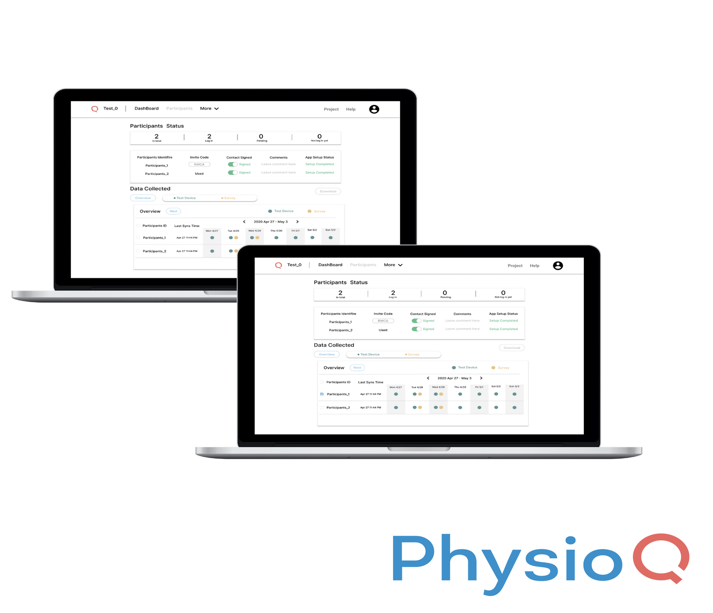
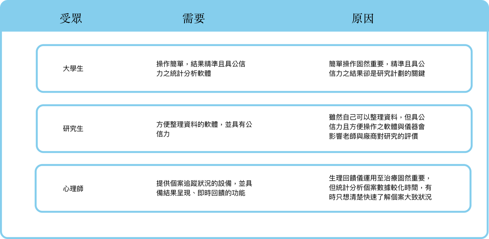
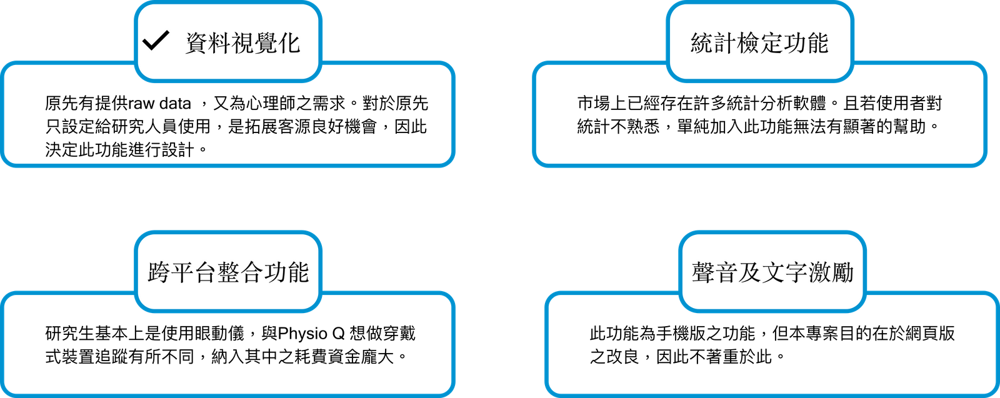

Physio Q
>
PhysioQ 為一協助利用生理數據進行研究、觀察或治療的人員的整合型產品，主要目的為更有效率及方便收集與受試者有關的生理數據。本研究為探索型研究，並試圖分析PhysioQ於臺灣市場可切入之機會點，並針對使用經驗進行分析與功能優化建議。
專案時間：2020.2 - 2020.4
專案負責項目：專案流程規劃、利害關係人訪談、使用者訪談與分析、Prototype製作
PhysioQ 可提供服務給欲利用生理數據進行分析與研究的學生及從業人員。但原先市場以美國大學研究中心為主，如今希望能透過此次研究，找出可將產品打入臺灣市場的機會點與如何優化目前的使用者體驗。透過使用者訪談得出心理師在追蹤個案時，生理回饋儀運用於治療固然重要，但統計分析個案數據較化時間，有時只想清楚快速了解個案 大致狀況，因此欲針對此痛點進行後續PhysioQ設計建議。
提供心理師能快速掌握個案狀況的資料視覺化功能。
給予PhysioQ團隊目前產品優化的建議方向
針對有在使用生理數據進行研究的受訪者進行需求訪談，共招募5位受訪者，整理出三類痛點：
1.
統計軟體不熟習、英文介面難以操作、數據龐大不易整理、紙本問卷輸入麻煩
2.
對研究機器不熟習、人工數據不易整理、英文溝通能力不好
3.解釋理回饋儀指標意義不易、個案離開診療室便無儀器可給予追蹤、回饋個案常做假練習資料
從各類別受訪者的訪談結果中萃取其現況與需求相矛盾處作為洞察，再依據洞察內容進行整，並發想且應用於新功能之原型設計。
Physio Q原先就有提供Raw data下載的功能，但尚無資料視覺化的功能，需要下載後再自行進行分析。而在需求分析中得知心理師需要針對個案 Raw data 進行快速的導覽。因此在考量開發上的限制，並結合市場可行性後，決定新增加資料視覺化功能。因為對於原先只設定給研究人員使用，是拓展客源良好機會。
不同施策方式給予不同服務。針對問卷維持原先Raw data 下載功能，穿戴式裝置則提供資料視覺化功能。
點擊上方圖片播放
針對穿戴式裝置則提供不同變項的資料視覺化功能。例如：連續變數給予趨勢圖呈現、類別變數給予圓餅圖呈現。
點擊上方圖片播放
針對資料視覺化功能，除了針對心理師想要清楚快速了解個案大致狀況的需求情境進行解決外，此功能亦推估可應用於其他族群所使用。初估可協助拓展PhysioQ於臺灣市場客群的使用意願。